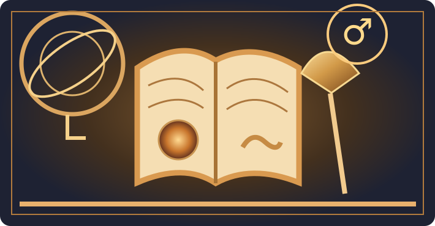

Cosmic Word → human voice
Guardians of Cosmic Speech → the soul's preparation for speaking → larynx and song → moral speech.
GA 231 · GA 228 · GA 218THE RUDOLF STEINER ATLAS
The planetary sphere of Mars appears in Steiner's teachings on cosmic evolution, spiritual hierarchies, the soul between lives and the human microcosm.
From cosmic evolution and spiritual hierarchies to the human being, the organs and particular correspondences.
Loading the seventh-pass Mars research…
EXPLORE THE RESEARCH
Expand a chapter to read its individual subsections with source references, evidence grades and contextual cautions from the seventh-pass PDF.
CROSS-SCALE PATHWAYS
Guardians of Cosmic Speech → the soul's preparation for speaking → larynx and song → moral speech.
GA 231 · GA 228 · GA 218The Mars/iron evolutionary image → red blood as an instrument for the I → courage and consciously directed freedom.
GA 102 · GA 100 · GA 231Older martial impulses → Buddha's 1604 deed in Steiner's account → a more inward, peace-giving sphere.
GA 130 · GA 140 · GA 141Gallbladder as inner Mars, breathing as life process, postmortem spiritual organ, and pre-birth chest/speech germ.
GA 128 · GA 208 · GA 227 · GA 231
SOURCE APPARATUS
Representative original lecture links. The seventh-pass source register contains stable identifiers S01–S126 and dated witness comparisons.
A means a direct statement is supported in the cited Steiner source; B is a source comparison or synthesis; C is tentative; D is an editorial judgment. These describe documentary support, not scientific truth.
Do not conflate visible Mars, spiritual sphere, hierarchic boundary, phase of Earth evolution, sleep-force, inner organ analogy, iron symbol or artistic correspondence.
Steiner's cosmology, medicine, race typologies and planetary agriculture are historical esoteric claims, not established astronomy, biology or medical science. Do not use these associations for diagnosis or self-treatment.
Unresolved textual issues include the conflicting GA 317 Mars/Venus chart witnesses and opposite 1907–08 spiritual-motion ratios. The BOTA Geburah–Mars Tree of Life placement is Atlas navigation, not a verified original Steiner doctrine.